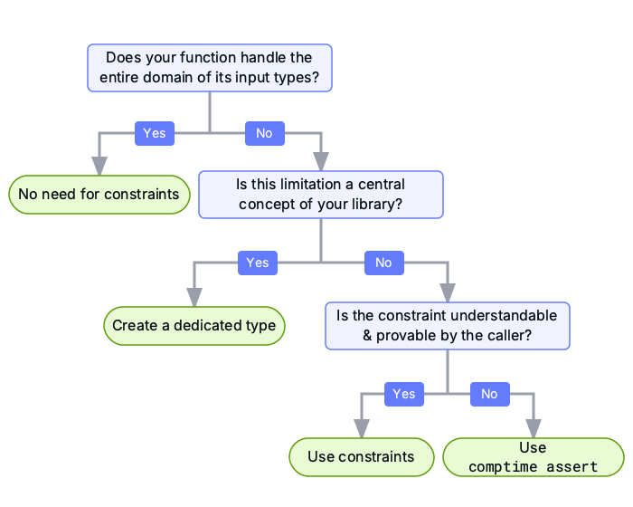
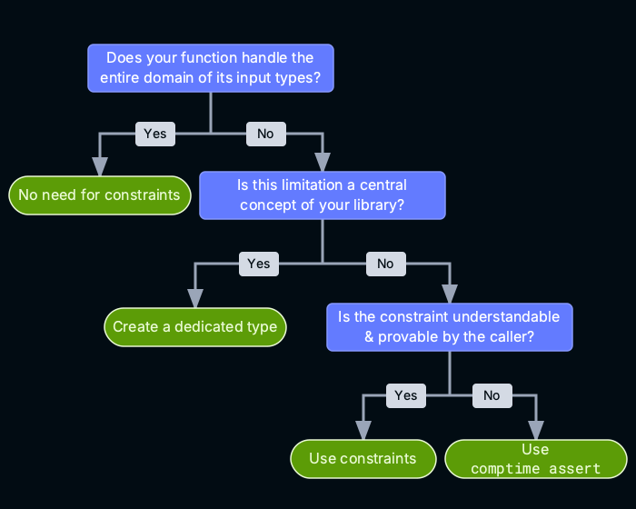
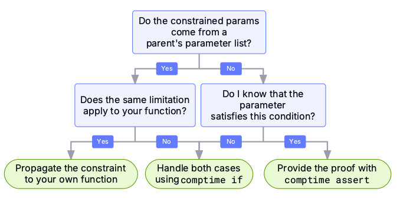
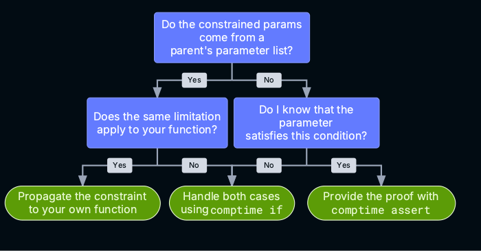

Comptime constraints and assertions
Rejecting types and values the compiler cannot accept.
Mojo's constraint system lets you express program guarantees that go beyond what the type system provides. This page explains how to use this system effectively.
A constraint, defined with the where keyword, represents a precondition for
calling a function or instantiating a struct:
def pow2[n: Int]() -> Int where n >= 0:
...
Here the pow2() function requires its n parameter to be greater than or
equal to 0. The expression n >= 0 is called a proposition. With the
exception of very simple expressions, Mojo doesn't evaluate these propositions
literally. Instead, it analyzes them symbolically, tracking a list of
propositions that are known to be true in the current scope. Understanding this
system of symbolic propositions is key to using constraints effectively.
Mojo also supports compile-time assertions, which test a proposition at compile time—if the assertion evaluates to false, compilation fails:
comptime assert x >= 0, "x must be greater than or equal to 0."
Defining constraints
You can use constraints in the following contexts:
-
At the end of a function, method, or in the parameters of struct declaration, to constrain the values that you can bind to one or more parameters.
def pow2[n: Int]() -> Int where n >= 0:A single
whereclause can constrain multiple parameters:def subspan[start: Int, end: Int](self) -> Self where end > start:Methods can gate their availability on parameters of the parent struct:
def sort() where conforms_to(Self.T, Comparable): -
In the trait conformance list for a struct, to declare that a struct conforms to a trait only when certain conditions are met.
struct MyContainer[T: AnyType](Copyable where conforms_to(T, Copyable)):You'll use this form, called conditional trait conformance, when defining parameterized types. For details, see the section on conditional trait conformances.
Symbolic propositions
The constraint system works with symbolic propositions.
def first[size: Int](array: Array[_, size]) -> array.T where size > 0:
...
In this case, size > 0 is a proposition that the constraint system tracks.
By analogy, when you annotate a type on an argument you ask the compiler to ensure callers only pass that type. When you annotate a constraint on a function, you ask the compiler to ensure that the proposition is true at the call site.
But the compiler can't test every proposition at every call site without running or interpreting unbounded amounts of code, which would vastly expand compile times. Instead, callers need to explicitly introduce "knowledge" into the constraint system.
Introducing knowledge
The compiler tracks knowledge by scopes: each scope contains a set of known true propositions, also known as "knowledge," and nested scopes accumulate knowledge from outer scopes.
There are four ways to introduce knowledge to the system:
-
Inside a struct declaration, all constraints declared on the struct are known, because concrete instances of the struct type can only be created when the proposition is true:
Mojo struct List[size: Int] where size >= 0: # Knowledge base: # - `size >= 0` -
Inside a function, all constraints declared on the function are known, because callers can only call the function if they guarantee the constraint holds:
Mojo def create_list[size: Int]() -> List[size] where size >= 0: # Knowledge base: # - `size >= 0` -
Inside a
comptime if, theifcondition is known, because the code within the body is only instantiated if the condition is true:Mojo comptime if size >= 0: # Knowledge base: # - `size >= 0` comptime if size.is_even(): # Knowledge base: # - `size >= 0` # - `size.is_even()` -
After a
comptime assert, the asserted condition is known, because the compiler won't instantiate a function if acomptime assertcondition is false. So any code after it is only instantiated if the assertion didn't fire:Mojo comptime assert size >= 0 # Knowledge base: # - `size >= 0` comptime assert size.is_even() # Knowledge base: # - `size >= 0` # - `size.is_even()`
Satisfying constraints with knowledge
Any time you call a function that has constraints, the system inspects the set of known-true propositions at the call site and determines whether the known set of propositions is a superset of the required set of propositions declared on the callee.
The constraint system treats all propositions symbolically: it doesn't know or care what the expression means and doesn't interpret the code. With a few very simple exceptions (discussed later), the system doesn't perform symbolic math on your behalf. Instead, it treats these propositions as opaque and only uses knowledge you've explicitly introduced in the calling scope.
# A function that wants a non-empty list.
def print_first[size: Int](l: Array[Int, size]) where size >= 1:
...
# A wrapper that wants a size >= 2 list.
def print_first_two[size: Int](l: Array[Int, size]) where size >= 2:
# Error: invalid call to 'print_first': lacking evidence to prove
# correctness
print_first[size](l)
# ...
Mojo checks constraints without knowing all the call sites, and these
expressions can reference symbolic parameter values-for example is_prime(x)
where x is unknown. Because of this, Mojo can't interpret is_prime() for all
possible values of x, nor can it make logical deductions. For example if
is_prime(x) and x > 2 are true, it can't deduce that is_odd(x) must also
be true.
Compile-time assertions
Use comptime assert to introduce a known-true proposition at a specific
point in the code:
comptime assert x > 0, "x must be greater than 0."
The message is optional. If the condition evaluates to false at compile time, compilation fails and the compiler shows the message (or a default message if none is specified).
Mojo adds the asserted condition to the list of "known true" propositions for any code following the assertion.
Constraints and assertions serve complementary roles: a where clause exposes
a requirement that callers must prove, and comptime assert is one way to
satisfy that requirement.
Limited evaluation of propositions
In general, it's safe to assume that the constraint system doesn't evaluate propositions directly, and that all knowledge needs to be provided explicitly. However, the constraint system does apply a very limited amount of "smartness" for very common cases. These are provided as a convenience and should not be treated as the norm.
The goal is to provide a consistent, predictable experience so users can recognize these patterns as they become more familiar with the system.
Simple implication
A known proposition of the form A and B can satisfy a requirement of A by
itself (or B by itself), even though symbolically they aren't identical
propositions.
def create_list[T: Copyable, size: Int]() -> List[T] where size >= 0:
return List[T](capacity = size)
def create_even_list[T: Copyable, size: Int]() -> List[T] where (
size >= 0 and (size / 2) * 2 == size
):
# No need to individually prove `size >= 0` — it's part of the
# `and` above, so the call to `create_list` type-checks.
return create_list[T, size=size]()
def main():
var l1 = create_even_list[Int, 4]()
print(len(l1) % 2)
# Prints 0, since the list has an even number of elements.
# var l2 = create_even_list[Int, 5]() # Won't compile: 5 isn't even.
Similarly, A implies A or B for any B.
Canonicalization
Sometimes there is more than one way to write the same expression. The system always simplifies expressions into a normal form internally, so expressions that aren't identical on the surface may be seen as identical by the system.
The following are self-explanatory (assume x: Int):
x > 0==x >= 1x >= 2==not (x < 2)x + x==2 * x
There's a special case for function calls. When invoking functions as part of a proposition, the system treats the entire function call as opaque. Only two identical function calls are the same.
def is_even(x: Int) -> Bool:
return x % 2 == 0
def needs_even[x: Int]() where is_even(x):
pass
def forward_even_bad[x: Int]() where x % 2 == 0:
# ERROR: Needs evidence for `is_even(x)`.
needs_even[x]()
def forward_even_good[x: Int]() where is_even(x):
# SUCCESS
needs_even[x]()
Context-free folding
This is more of an extreme case of canonicalization than a separate category, but may catch people by surprise.
Certain primitive operations on constants can be canonicalized into a new constant. For example:
1 + 1==24 % 2==01 == 1==True
This extends to expressions with a mix of constants and non-constants:
1 + x + 1==2 + x
Concretely, this means you may omit explicitly providing knowledge for propositions that are simple operations on constants:
def create_my_list() -> List[2]:
# No need to provide evidence for `2 >= 0`.
return create_list[2]()
Best practices
The examples here focus on functions (declaring constraints when writing functions and satisfying constraints when calling functions), but the tips generalize to other forms of constraints such as struct parameter constraints and conditional trait conformances.
Writing functions
When writing a function, how do you decide whether a where clause is right
for you?


Q1: Does your function handle the entire domain of its input types?
If you can write your function so that it returns a result or throws an error on all inputs, you don't need to care about constraints at all. Just write your function as usual.
For example, the following functions do not need constraints since they're guaranteed to return or throw:
def create_list_opt[size: Int]() -> Optional[List[size]]:
comptime if size < 0:
return None
return ...
def create_list_raise[size: Int]() raises -> List[size]:
comptime if size < 0:
raise Error("negative size!")
return ...
Constraints are only for cases where you don't want to check for exceptional cases at execution time.
- Constraints ask the type checker to rule out exceptional cases so that a type-checked program guarantees you (as the function author) don't need to handle these cases in your function body using run-time resources.
- As always, enforcing static guarantees isn't free. You're trading off run-time error checking logic for compile-time proof writing. In the absence of hard limits that prevent you from error checking at run time, it comes down to your preference for user experience.
Q2: Is this limitation a central concept of your code?
If the condition represents a concept that is central to your code, a
dedicated type may be easier than sprinkling where everywhere.
Examples:
- A SIMD library that needs to represent SIMD width values, which aren't arbitrary integers.
- A filesystem library that needs to represent paths that follow specific format rules.
- A network library that needs to represent port numbers, which must be in the valid range.
This is a good approach because the constraint is proven once (at construction)
and the refined value can be passed around unconstrained until it needs to be
disassembled. Your APIs stay simpler: fewer where clauses, fewer repeated
asserts.
A new type doesn't come for free though, as it's no longer freely interoperable with the original type. Make sure that the semantics are distinct enough to warrant the extra code. For example, writing a new type usually means implementing dunder methods corresponding to common operators (addition, subtraction, equality, and so on), which preserve the semantics of the new type.
Q3: Is the constraint understandable and provable by the caller?
If yes, use constraints.
Make the condition part of the function's contract so that callers must prove it.
This tends to be the right choice when:
- The condition is a user-facing requirement that the user can understand.
- Callers typically already need to handle the "bad" case themselves (for
example, they may already have a
comptime ifthat branches on this condition).
Example:
def take_prefix[n: Int, len: Int](...) -> ... where 0 <= n <= len:
...
One practical heuristic: if a user can read the function signature and
immediately understand what they did wrong when the constraint fails,
where is likely the right tool.
If the constraint is not understandable or not provable by the
user, use assert or abort.
If the "bad case" isn't something users would understand, adding a where
constraint only causes more confusion, as users can't reasonably prove it
themselves.
- This typically happens when your library returns a value that has some
internal constraints on it and expects users to pass it back with those
constraints. For example, a communication library passes a device handle to
the user as an
Int, which has properties that are only known internally (for example, non-negative, special bits). Library APIs accepting this handle can't expect the user to prove these. - There are usually more type-safe ways to achieve the same thing, so only do
this if you don't care about type safety. For example, a more type-safe
approach is to introduce a new type for the device handle so users are less
likely to accidentally pass another
Intor modify the returned value unexpectedly.
Summary
- Use a dedicated type when the condition is a common refinement that should be proven once and reused everywhere.
- Use
wherewhen the condition is a user-understandable precondition. - Use
comptime assertorabortfor internal inconsistencies in your library where a user can't do anything with the failure.
Calling functions
When calling a function, how do you show proof that you've satisfied the constraint?
This is where the constraint system actively guides you into handling exceptional cases.


Q1: Do the constrained parameters come from a parent parameter list?
If the constrained parameter you're passing is from the function's parameter list, or is a parameter on the enclosing struct, you're basically "forwarding" a value from one parameter list to another. Go to Q2.
If not, you computed the value inside the function body, and you're in "construction" territory. Go to Q3.
Q2: Does the same limitation apply to your function?
If you're forwarding a constrained parameter into another constrained API, it's usually a hint to propagate the same requirement onto your own function.
For example, to propagate the constraint to your callers:
def create_list[T: Copyable, size: Int]() -> List[T] where size >= 0:
return List[T](capacity = size)
# This function is also only meaningful when size >= 0.
# Make that part of the contract too.
def create_list_and_process[T: Copyable, size: Int](value: T) where size >= 0:
comptime xs = create_list[T, size=size]()
...
But if you want your function to accept a wider input domain, your job is
to handle both cases explicitly using a comptime if.
For example, narrow the domain by checking before the call:
def create_list_and_fill[size: Int]() -> Optional[List[size]]:
comptime if size >= 0:
return needs_nonneg[size]()
else:
return None
Q3: Do you know that the parameter already satisfies this condition?
If the parameter didn't come from a parent parameter list, it must have been computed in the body.
Decide whether the desired constraint holds by construction.
If it does, indicate this to the constraint system via a comptime assert.
Note that this is you explicitly taking over the burden of proof.
Don't be afraid to write these asserts. The symbolic nature of the constraint
system means that it is conservative—logical deductions that are obvious to
you aren't always "obvious" to it. Adding comptime assert is not a
code smell, but rather an inseparable part of working within the constraint
system.
For example, given a computed parameter that is always valid:
# The constraint on hi & lo guarantees a valid size.
# Introduce this piece of knowledge explicitly.
comptime size = hi - lo
comptime assert size >= 0, "span is guaranteed non-negative"
return create_list[size]()
But if the constraint does not necessarily hold, insert a comptime if and
handle both cases explicitly.
For example, a computed parameter that may be invalid:
# This version does NOT have a constraint on its inputs.
# Branch on the computation to handle both cases.
def create_list_from_span[lo: Int, hi: Int]() -> Optional[List[hi - lo]]:
comptime size = hi - lo
comptime if size >= 0:
return create_list[size]()
else:
return None
Summary
- Constraints are part of the API contract.
- A
whereclause is a precondition that the API author requires the caller to prove.
- A
- The compiler doesn't automatically derive evidence for callers.
- The caller must explicitly provide evidence that the precondition is always satisfied.
- If a caller gets a "lacking evidence" error, they can:
- Add a constraint to push the requirement onto their own callers.
- Branch on the condition (
comptime if). - Assert an invariant (
comptime assert).
This chapter is a faithful rendering of the Mojo documentation page https://mojolang.org/docs/manual/metaprogramming/constraints/, saved Thu, 01 Oct 2026 15:41:16 GMT.